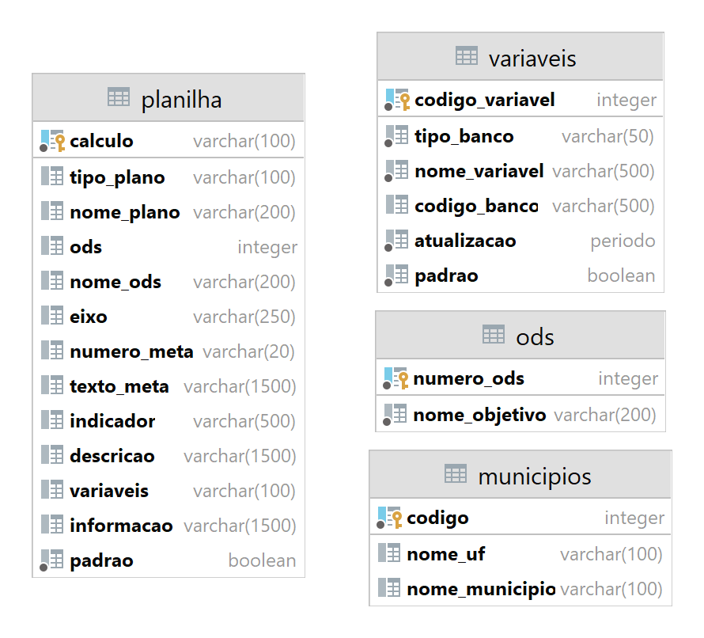

Banco de dados
Para armazenar todas as informações dos indicadores, variáveis, metas, ODS e resultados, foi feito um mapeamento desses dados em um banco de dados relacional. Para dar suporte às funcionalidades do software, foi implementado o seguinte banco de dados:

Figura 1: Banco de dados
Indicadores (Tabela: indicador)
A tabela de indicadores armazena todas as informações relacionadas ao indicador. Os campos da tabela e seus significados são descritos na tabela abaixo:
| Campo | Tipo | Propriedades | Descrição |
|---|---|---|---|
| codigo_indicador | Inteiro | Chave primária | Este campo armazena o código do indicador. |
| nome_indicador | Texto | Não pode ser nulo | Este campo armazena o nome do indicador. |
| metodo_calculo | Texto | Valor único, não pode ser nulo | Este campo armazena o método de cálculo do indicador. Cada indicador deve ter um método de cálculo único. Os operadores aceitos são: "+" (soma), "-" (subtração), "x" (multiplicação) e "/" (divisão). Os números representam o código de uma variável, números entre colchetes "[ ]" indicam números naturais e números entre chaves "{ }" representam o código de outro indicador. É possível utilizar parênteses "( )" para determinar a precedência de uma operação. |
| nome_eixo | Texto | Não pode ser nulo | Este campo armazena o nome do eixo temático do indicador. O sistema é estruturado em 12 eixos temáticos, alinhados aos Objetivos de Desenvolvimento Sustentável (ODS), para facilitar a organização e análise dos indicadores. O nome do eixo temático permite a identificação da área temática a que o indicador se refere. |
| tipo_plano | Texto | Pode ser nulo | Este campo armazena o tipo de plano ao qual o indicador está vinculado, sendo possível classificá-lo como estratégico ou setorial, de acordo com o contexto de utilização do indicador. |
| nome_plano | Texto | Pode ser nulo | Este campo registra o nome do plano ao qual o indicador está associado, fornecendo informações sobre o contexto de utilização do indicador e permitindo sua identificação precisa. |
| descricao | Texto | Não pode ser nulo | Este campo armazena a descrição do indicador, fornecendo informações detalhadas sobre o objetivo e a finalidade do mesmo, o que ajuda a fornecer contexto e compreensão sobre os resultados gerados. |
| informacoes_tecnicas | Texto | Pode ser nulo | Este campo armazena as informações técnicas do indicador. |
| numero_meta | Texto | Chave estrangeira, pode ser nulo | Este campo armazena o código da meta à qual o indicador está vinculado. |
| padrao | Booleano | Não pode ser nulo | Este campo indica se o indicador é padrão ou não. Um indicador é considerado padrão se foi baixado pelo sistema. |
Tabela 1: Tabela dos indicadores
Variáveis (Tabela: variavel)
A tabela de variáveis armazena informações detalhadas sobre cada variável utilizada nos indicadores. Cada campo da tabela possui um significado específico, que pode ser consultado na tabela a seguir:
| Campo | Tipo | Propriedades | Descrição |
|---|---|---|---|
| codigo_variavel | Inteiro | Chave primária | Este campo armazena o código da variável. |
| nome_variavel | Texto | Não pode ser nulo | Este campo armazena o nome da variável. |
| tipo_banco | Texto | Não pode ser nulo | Este campo registra o tipo de banco de dados onde a variável está armazenada, podendo ser: banco de dados local (BD), API SIDRA (Sidra) ou outras bases de dados governamentais. |
| codigo_banco | Texto | Pode ser nulo | Este campo armazena o código necessário para acessar o banco de dados da variável. Se a variável estiver localizada no banco de dados local, o código deve ser nulo. |
| atualizacao | Texto | Não pode ser nulo | Este campo registra o período de atualização da variável, indicando se a sua atualização ocorre anualmente ou a cada dez anos. |
| padrao | Booleano | Não pode ser nulo | Este campo indica se a variável é padrão ou não. Uma variável é considerada padrão se foi baixada pelo sistema. |
Tabela 2: Tabela das variáveis
Metas (Tabela: meta)
A tabela de metas armazena todas as informações referentes a uma meta. Cada campo está detalhado na tabela a seguir:
| Campo | Tipo | Propriedades | Descrição |
|---|---|---|---|
| numero_meta | Texto | Chave primária | Este campo armazena o código da meta. |
| texto_meta | Texto | Não pode ser nulo | Este campo armazena o texto da meta. |
| numero_ods | Inteiro | Chave estrangeira, Não pode ser nulo | Este campo armazena o número do ODS (Objetivo de Desenvolvimento Sustentável) ao qual a meta está vinculada. |
Tabela 3: Tabela das metas
ODS (Tabela: ods)
A tabela de ODS é responsável por armazenar o número e nome de cada ODS. O significado de cada campo pode ser visto na tabela a seguir:
| Campo | Tipo | Propriedades | Descrição |
|---|---|---|---|
| numero_ods | Inteiro | Chave primária | Este campo armazena o número da ODS. |
| nome_objetivo | Texto | Não pode ser nulo | Este campo armazena o nome do objetivo de desenvolvimento sustentável (ODS). |
Tabela 4: Tabela das ODS
Municípios (Tabela: municipio)
A tabela de municípios armazena as informações principais relacionadas aos municípios. Cada campo na tabela tem um significado específico, que pode ser consultado na tabela a seguir:
| Campo | Tipo | Propriedades | Descrição |
|---|---|---|---|
| codigo_municipio | Inteiro | Chave primária | Este campo armazena o código do município segundo o IBGE. |
| nome_municipio | Texto | Não pode ser nulo | Este campo armazena o nome do município. |
| nome_uf | Texto | Não pode ser nulo | Este campo armazena o nome por extenso da unidade federativa. |
Tabela 5: Tabela dos municípios
Datas (Tabela: data)
A tabela de datas armazena informações relacionadas ao ano e ao código referente a cada ano. O significado de cada campo pode ser encontrado na tabela abaixo:
| Campo | Tipo | Propriedades | Descrição |
|---|---|---|---|
| data | Texto | Chave primária | Este campo armazena um ano. Em casos onde a informação está disponível em outros períodos além do anual, é possível utilizar este campo para armazenar informações como mês, trimestre, semestre, entre outros. |
| codigo_data | Texto | Não pode ser nulo | Este campo armazena o código que corresponde ao ano ou período em questão. Em geral, para anos, o próprio ano é utilizado como código. Já para outros períodos, é possível armazenar um código específico neste campo. |
Tabela 6: Tabela das datas
Possui variável (Tabela: possui_variavel)
A tabela "possui_variavel" é responsável por estabelecer o relacionamento entre a tabela "indicador" e a tabela "variavel", indicando quais variáveis fazem parte de cada indicador. O significado dos dois campos presentes na tabela pode ser visto na tabela a seguir:
| Campo | Tipo | Propriedades | Descrição |
|---|---|---|---|
| codigo_indicador | Inteiro | Chave primária composta | Este campo armazena o código do indicador. |
| codigo_variavel | Inteiro | Chave primária composta | Este campo armazena o código da variável. |
Tabela 7: Tabela possui_variavel
Valor da variável (Tabela: valor_variavel)
A tabela "valor_variavel" é responsável por armazenar os valores das variáveis referentes a um determinado município e ano. Ela representa o relacionamento entre as tabelas "variavel", "municipio" e "data". O significado de cada campo pode ser visto na tabela a seguir:
| Campo | Tipo | Propriedades | Descrição |
|---|---|---|---|
| codigo_variavel | Inteiro | Chave primária composta | Este campo armazena o código da variável. |
| codigo_municipio | Inteiro | Chave primária composta | Este campo armazena o código do município. |
| data | Texto | Chave primária composta | Este campo armazena a data. |
| valor | Texto | Pode ser nulo | Este campo armazena o valor da variável para um município específico em uma data específica. |
| valor_atualizado | Booleano | Pode ser nulo | Este campo indica se o valor da variável foi obtido em uma data considerada atualizada ou não. Por exemplo, suponha que a taxa de atualização da variável seja decenal e a busca da variável seja realizada para o ano de 2015. Se o valor da variável for encontrado para uma data anterior a 2015, por exemplo em 2010, então o campo será marcado como "false", indicando que o valor não é considerado atualizado. Por outro lado, se o valor for encontrado para a data de 2015, o campo será marcado como "true", indicando que o valor é considerado atualizado. |
| valor_oficial | Booleano | Pode ser nulo | Este campo indica se o valor da variável foi obtido a partir de uma fonte oficial, como uma base de dados governamental, ou se foi inserido manualmente no banco de dados sem uma fonte específica. |
Tabela 8: Tabela valor_variavel
Calculo do indicador (Tabela: calculo_indicador)
A tabela "calculo_indicador" registra os cálculos dos indicadores para cada município e data, relacionando-se com as tabelas "indicador", "municipio" e "data". O significado de cada campo pode ser visto na tabela a seguir:
| Campo | Tipo | Propriedades | Descrição |
|---|---|---|---|
| codigo_indicador | Inteiro | Chave primária composta | Este campo armazena o código do indicador. |
| codigo_municipio | Inteiro | Chave primária composta | Este campo armazena o código do município. |
| data | Texto | Chave primária composta | Este campo armazena a data. |
| resultado | Texto | Não pode ser nulo | Este campo armazena o valor do indicador para um município específico em uma data específica. |
| data_variaveis | Texto | Pode ser nulo | Este campo armazena as datas utilizadas para buscar os valores das variáveis que foram utilizadas no cálculo do indicador. Cada data é associada ao respectivo código da variável, seguindo o padrão "código da variável"/"data". Por exemplo, se um indicador utiliza as variáveis 1 e 2, e os valores foram buscados em 2020, o resultado seria: "1/2020/2/2020". |
| valor_oficial | Booleano | Pode ser nulo | Este campo indica se o valor do indicador foi calculado somente a partir de valores oficiais provenientes de bases de dados oficiais ou se houve a necessidade de utilizar informações de outras fontes. |
Tabela 9: Tabela calculo_indicador
Importados
Para importar todos os arquivos disponibilizados pelo software, será criado um esquema denominado "importados" no banco de dados, que será responsável por armazenar as informações antes de serem transferidas para as tabelas principais.
Figura 2: Esquema importados
Municipios (Tabela: importados.municipios)
Essa tabela é semelhante à tabela de municípios, mas serve apenas como uma tabela temporária para armazenar dados antes de serem importados para a tabela principal.
| Campo | Tipo | Propriedades | Descrição |
|---|---|---|---|
| codigo_municipio | Inteiro | Chave primária | Este campo armazena o código do município segundo o IBGE. |
| nome_municipio | Texto | Não pode ser nulo | Este campo armazena o nome do município. |
| nome_uf | Texto | Não pode ser nulo | Este campo armazena o nome por extenso da unidade federativa. |
Tabela 10: Tabela importados.municípios
ODS (Tabela: importados.ods)
Essa tabela é semelhante à tabela de ods, mas serve apenas como uma tabela temporária para armazenar dados antes de serem importados para a tabela principal.
| Campo | Tipo | Propriedades | Descrição |
|---|---|---|---|
| numero_ods | Inteiro | Chave primária | Este campo armazena o número da ODS. |
| nome_objetivo | Texto | Não pode ser nulo | Este campo armazena o nome do objetivo de desenvolvimento sustentável (ODS). |
Tabela 11: Tabela importados.ods
Variáveis (Tabela: importados.variaveis)
Essa tabela é semelhante à tabela de variáveis, mas serve apenas como uma tabela temporária para armazenar dados antes de serem importados para a tabela principal.
| Campo | Tipo | Propriedades | Descrição |
|---|---|---|---|
| codigo_variavel | Inteiro | Chave primária | Este campo armazena o código da variável. |
| nome_variavel | Texto | Não pode ser nulo | Este campo armazena o nome da variável. |
| tipo_banco | Texto | Não pode ser nulo | Este campo registra o tipo de banco de dados onde a variável está armazenada, podendo ser: banco de dados local (BD), API SIDRA (Sidra) ou outras bases de dados governamentais. |
| codigo_banco | Texto | Pode ser nulo | Este campo armazena o código necessário para acessar o banco de dados da variável. Se a variável estiver localizada no banco de dados local, o código deve ser nulo. |
| atualizacao | Texto | Não pode ser nulo | Este campo registra o período de atualização da variável, indicando se a sua atualização ocorre anualmente ou a cada dez anos. |
| padrao | Booleano | Não pode ser nulo | Este campo indica se a variável é padrão ou não. Uma variável é considerada padrão se foi baixada pelo sistema. |
Tabela 12: Tabela importados.variáveis
Planilhas (Tabela: importados.planilha)
A tabela "importados.planilha" armazena informações sobre os indicadores, incluindo as metas e ODS relacionadas e as variáveis utilizadas para calcular o indicador. Quando esta tabela é importada no programa, ele realiza a separação correta do indicador e das variáveis utilizadas, e inclui essas informações na tabela "possui_variavel", que representa o relacionamento entre as variáveis e os indicadores. Além disso, ele preenche a tabela de metas com o relacionamento entre as metas e ODS.
| Campo | Tipo | Propriedades | Descrição |
|---|---|---|---|
| calculo | Texto | Valor único, não pode ser nulo | Este campo armazena o método de cálculo do indicador. Cada indicador deve ter um método de cálculo único. Os operadores aceitos são: "+" (soma), "-" (subtração), "x" (multiplicação) e "/" (divisão). Os números representam o código de uma variável, números entre colchetes "[ ]" indicam números naturais e números entre chaves "{ }" representam o código de outro indicador. É possível utilizar parênteses "( )" para determinar a precedência de uma operação. |
| tipo_plano | Texto | Pode ser nulo | Este campo armazena o tipo de plano ao qual o indicador está vinculado, sendo possível classificá-lo como estratégico ou setorial, de acordo com o contexto de utilização do indicador. |
| nome_plano | Texto | Pode ser nulo | Este campo registra o nome do plano ao qual o indicador está associado, fornecendo informações sobre o contexto de utilização do indicador e permitindo sua identificação precisa. |
| ods | Inteiro | Pode ser nulo | Este campo armazena o número do ODS (Objetivo de Desenvolvimento Sustentável) ao qual a meta está vinculada. |
| nome_ods | Texto | Pode ser nulo | Este campo armazena o nome do objetivo de desenvolvimento sustentável (ODS). |
| eixo | Texto | Não pode ser nulo | Este campo armazena o nome do eixo temático do indicador. O sistema é estruturado em 12 eixos temáticos, alinhados aos Objetivos de Desenvolvimento Sustentável (ODS), para facilitar a organização e análise dos indicadores. O nome do eixo temático permite a identificação da área temática a que o indicador se refere. |
| numero_meta | Texto | Pode ser nulo | Este campo armazena o código da meta à qual o indicador está vinculado. |
| texto_meta | Texto | Pode ser nulo | Este campo armazena o texto da meta. |
| indicador | Texto | Não pode ser nulo | Este campo armazena o nome do indicador. |
| descricao | Texto | Não pode ser nulo | Este campo armazena a descrição do indicador, fornecendo informações detalhadas sobre o objetivo e a finalidade do mesmo, o que ajuda a fornecer contexto e compreensão sobre os resultados gerados. |
| variaveis | Texto | Pode ser nulo | Este campo armazena os códigos das variáveis que fazem parte do método do cálculo do indicador. |
| informacao | Texto | Pode ser nulo | Este campo armazena as informações técnicas do indicador. |
| padrao | Booleano | Não pode ser nulo | Este campo indica se o indicador é padrão ou não. Um indicador é considerado padrão se foi baixado pelo sistema. |
Tabela 13: Tabela importados.planilha